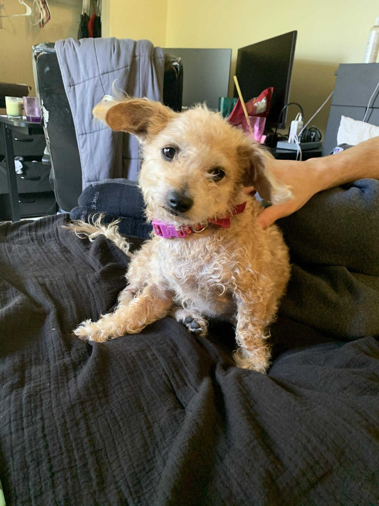
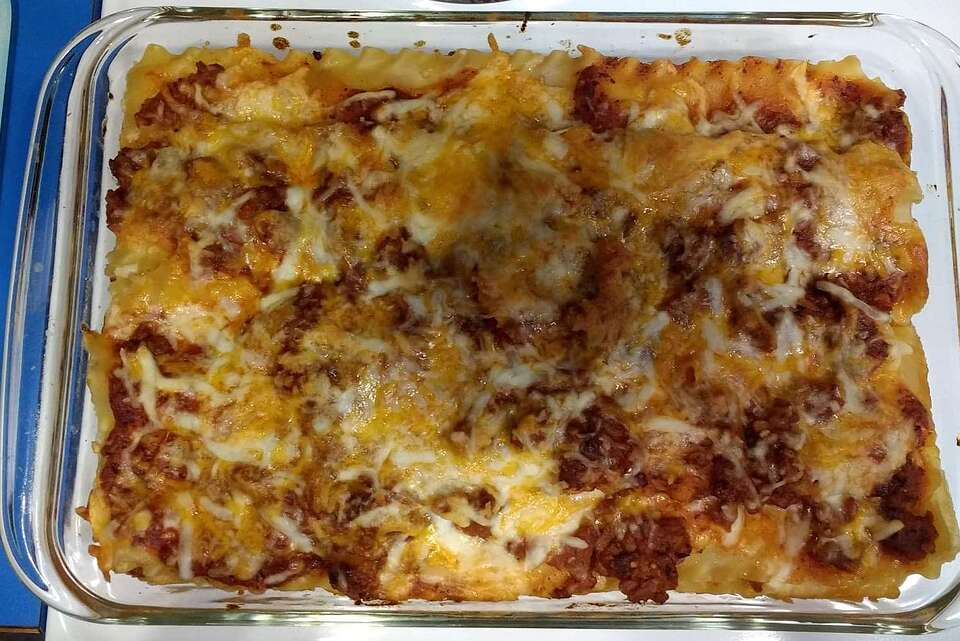
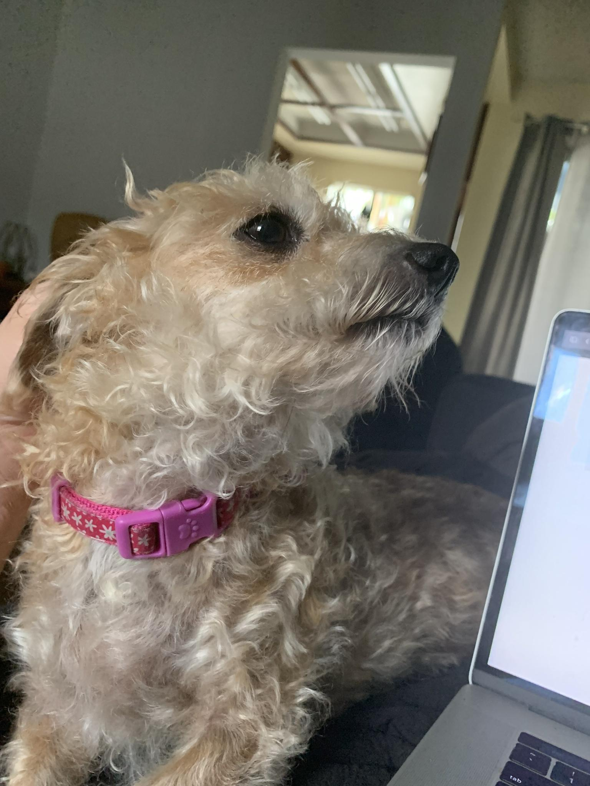

Delicious lasagna straight from Kentucky
This is acutally a spooky ghost recipe that will ensure your socks are spooked right off your feet
- 3 cups of bread flour
- 3 cups mozzerella
- 1 German fricussee sliced into quarters
- 2 ripe tomatoes
- 15 slices of vegetarian pepperoni pie
1. Step one is to take the exhaust pipe and stick it into the batter
2. Next you want to get in a crouching position and (while screaming like a banshee) jump so that your head touches the ceiling of your kitchen
3. Finally, after the chicken has been thouroughly tenderized, grate the cheese and let them sit in your shoes for about 3 winter nights
Home